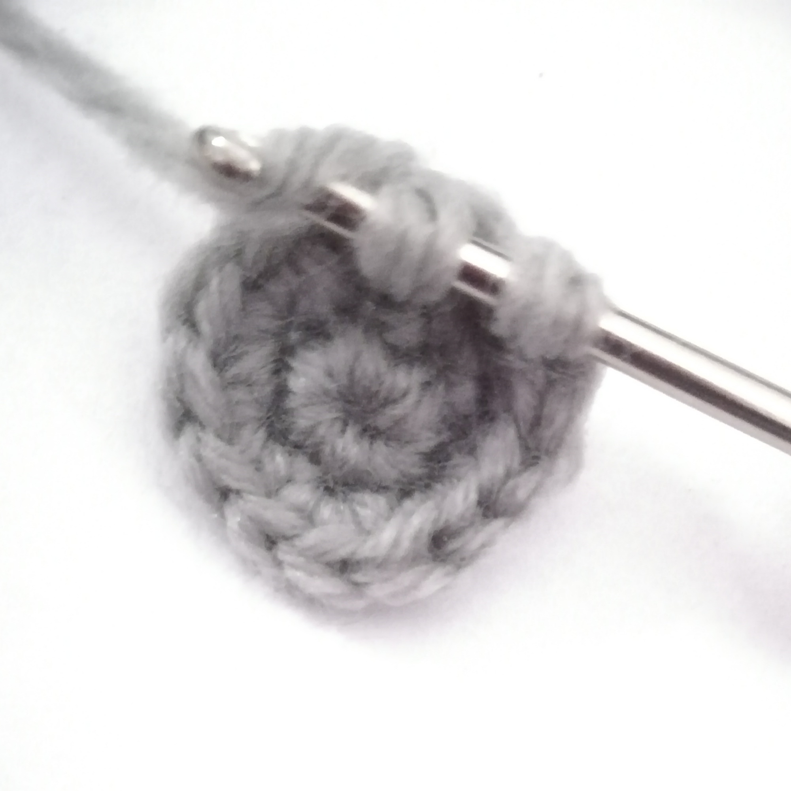

Crochet Stitches
Sophie Janotta, 2015, pixabay (https://pixabay.com/photos/knit-knitting-pattern-handwork-wool-674389/).
On this webpage, I will be covering:
Do you need a review of the basics of crocheting? Go to the Crocheting Introduction webpage.
Slip Knot & Magic Ring/Loop
The slip knot and magic ring/loop are like the foundation of the craft. Before starting to crochet, you have to either first perform the slip knot or the magic ring/loop (or something similar).
Slip Knot
Make a loop at the end of the yarn (around 5cm from the end of the yarn), then tie a knot at the bottom of the loop. Make sure you don't completely pull through the loop, or you will make a knot instead of a slip knot. Lastly, slide the crochet hook into the loop, then tighten the loop. Make sure it's tight but still somewhat loose.
Hadron137, 2016, Wikimedia Commons (https://commons.wikimedia.org/wiki/File:SlipKnot.jpg).
{kind=link}
When you start with a slip knot, you will be working in the flat for that piece (working in rows and turning the piece over after each row, then continuing to crochet.)
Magic Ring/Loop
The magic ring / magic loop is quite difficult to explain, so here's a video instead.
Wency Xie, 2021
When you start with a magic ring/loop (or something similar), you will be working in the round for that piece (working in a circular direction instead of in rows).
Yarn Over
Yarning over is an essential to learn in order to perform any of the stiches.
To yarn over, you bring the crochet hook under, then behind the yarn.
Wency Xie, 2021
The abbreviation for yarn over is (yo).
Stitches
Stitches are what makes up the crocheted pieces. They are done after you've started the piece with a slip knot or magic ring/loop.
The stitches that I will be including are:
Note: Each chain, single crochet, and decrease are one stitch. An increase is two stitches.
Chain
To chain once, you will yarn over, then (using your crochet hook) pull the yarn through the loop. You can chain however many times you need by repeating that process.
Cary Bass, 2008, Wikimedia Commons (https://commons.wikimedia.org/wiki/File:Crochet-chain.svg).
{kind=link}
The abbreviation for chain is (ch).
Slip Stitch
To slip stitch, you go into the next stitch, yarn over, pull the yarn through the loop, then pull the yarn through the last loop.

Wency, 2021
The abbreviation for slip stitch is (sl) or (st).
Single Crochet
To single crochet, you first insert your crochet hook into the next stitch, yarn over, pull the yarn through the loop, yarn over again, then pull the last loop through the two other loops. (if there's an amount of number as to how many single crochet stitches there are in one same stitch, then single crochet that amount of times into the same stitch. This will turn one stitch into however many stitches you single crochet.)
Wency Xie, 2021
The abbreviation for single crochet is (sc).
Increase
To increase, you insert your crochet hook into the next stitch, then do two single crochets in the same stitch. That one stitch will now become two stitches.
Single crochet #1:

Wency Xie, 2021
Single crochet #2:
Wency Xie, 2021
The abbreviation for increase is (inc).
Decrease
To decrease, you insert your crochet hook into the front loop(the loop of the stitch that is closest to you) of the next stitch, then into the front loop of the stitch after that. Next, you yarn over, pull through two loops, yarn over again, then pull through the last two loops. Two stitches will now become one stitch.
Wency Xie, 2021
The abbreviation for decrease is (dec)
Other Tutorials
- Website:the spruce Crafts - Crochet Tutorials
- Website:ALLFREECROCHET
- Videos:HOW TO CROCHET FOR ABSOLUTE BEGINNERS | EPISODE ONE | Bella Coco Crochet
- Videos:Crocheting 101: How to Crochet for Complete Beginners
Amigurumi Patterns
Validators

Back to the top.